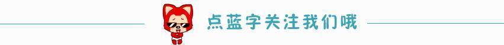
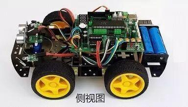

理工杯机器人开赛通知

小编今天问大家一句：看过速度与激情么？
相信很多人都有看过。那小编再问一句：看过机器人小车版的速度与激情么？

没有错，就是它。选手们自己亲手精心制作的小车即将踏上赛道，开始自己的“速度与激情”。
现在来说说比赛相关
比赛时间（竞技赛）
12月10日，12月11日，请大家务必仔细观看参赛手册，明确参赛时间，避免迟到！！
比赛地点
文体中心一楼大厅
微信投票（最酷智能车评网评比赛）
进行了四天之久的答辩环节终于接近了尾声，但不要忘了还有重要的15%微信投票分数，这15%分数也许是你超越其他队伍的最佳机会！所以，请及时关注沈理电协，参与微信投票环节。
更多详情见参赛手册，小编祝大家取得好成绩！


编辑 信息部/姚鸿权